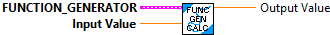
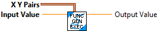

Insert new X, Y pair into an existing Function Generator data cluster. If the X values matches an existing X value, the new X and Y values replaces the old values.
Inputs:
- In Function Generator -- Function generator data cluster
- X -- X value
- Y -- Y value
Outputs:
- out Function Generator -- updated data structure

Insert new X, Y pair into an existing Function Generator data cluster. If the X values matches an existing X value, the new X and Y values replaces the old values.
Inputs:
- In Function Generator -- Function generator data cluster
- XY -- Pair of X, Y value
Outputs:
- out Function Generator -- updated data structure

Calculate the output Y value for the provided X. This is done by interpolating through an array of X and Y pairs. The pairs must be ordered in increasing X value.
If there's no matching key, the value returned will be a linear interpolation between the keys before and after the provided one.
Inputs:
- Function_Generator -- function generator data structure
- Input Value -- The input value.
Outputs:
- Output Value -- Output value calcuated from the input value.

Clear out all X, Y entries
Inputs:
- in Function Generator -- Data cluster
Outputs:
- Function Generator -- Updated data cluster

Convience, single call, LabVIEW function. Creates and calculates the function generator.
If there's no matching key, the value returned will be a linear interpolation between the keys before and after the provided one.
Inputs:
-- X Y Pairs -- Array of pairs of X and Y values
-- Input Value -- Input "X" value
Outputs:
-- Output Value -- Calcuated value "Y" for the input "X" value.

Create a new Funtion Generator. Function Generators (Interpolating Tree Maps) are used to get values at points that are not defined by making a guess from points that are defined. This uses linear interpolation.
Inputs:
- X Y Pairs -- (Optional) Array of pairs of X and Y values used to define this function generator. Additional X Y pairs can be added later.
Outputs:
- Function Generator -- Created data structure